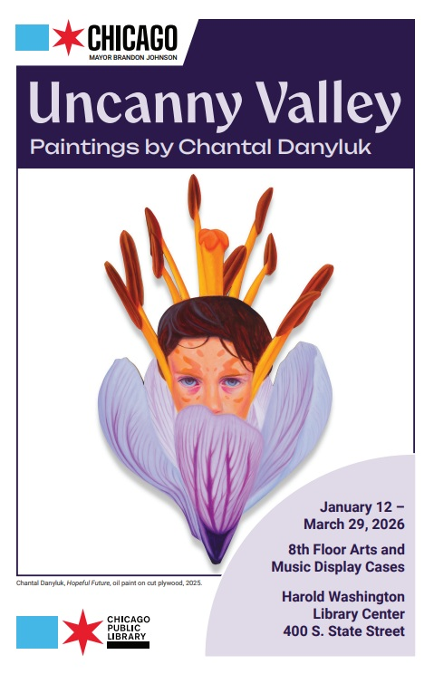

Chantal Danyluk: Uncanny Valley
A new art exhibit, Uncanny Valley, opens January 12, 2026, on the 8th floor of Harold Washington Library Center. Uncanny Valley, featuring large-scale oil paintings by Chantal Danyluk, is the fourth and final exhibit in the 2025-2026 Eighth Floor Call for Artists cycle.
Danyluk’s work challenges the viewer to rethink their perception of difference. Originally diagnosed with autism in 2004, Danyluk now celebrates neurodiversity in her strange, otherworldly work. Her large-scale oil paintings feature hyper saturated, humanoid figures cut out of plywood. Her alien subjects reimagine imagery such as amphibians, flowers, and bugs to illustrate the discomforts of existing in society. She draws parallels between the natural world’s biodiversity and neurodiversity, creating metaphors for the autistic experience and highlighting the intrinsic value of variances in nature.
Danyluk has exhibited widely throughout the Chicagoland area and greater Midwest. She has had solo shows at the Leslie Wolfe Gallery and the One River School of Art. Individual works from her collection have also been shown at ARC Gallery, Woman Made Gallery, and the Robert T. Wright Community Gallery. In 2024, Comfort Station added her to their “Artists to Watch” list.
Uncanny Valley will be on display on the 8th floor of Harold Washington Library Center from January 12, 2026, to March 29, 2026.